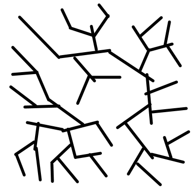
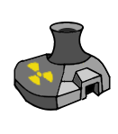

| Shooting Out | Shooting Into/Through | Moving Penalty | Notes | |
|---|---|---|---|---|

Open Terrain |
None | None | None | |

Light Forest (lvl 1) |
0 | -1 | 1 Hex | |


Medium Forest (lvl 2) |
-1 | -2 | 2 Hexes | |


Heavy Forest (lvl 3) |
-2 | -3 | 3 Hexes | |

Shallow Water |
-1 | -1 | 1 Hex | Reduces incoming nuclear damage by 1d4 (or a flat -1 if being hit by a TNM). |

Medium Water |
-2 | -2 | 2 Hexes | Reduces incoming nuclear damage by 2d4 (or a flat -2 if being hit by a TNM). |

Deep Water |
-3 | -3 | 2 Hexes | Reduces incoming nuclear damage by 3d4 (or a flat -3 if being hit by a TNM). The intense pressure of water at this depth deals 1d4 damage that ignores shields at the end of the player's turn. |

Rubble |
0 | -2 | 4 Hexes | |
|

Rough Terrain |
None | None | 4 Hexes | |

Buildings |
-1 | -2 | 2 Hexes | Light Buildings can be moved and shot through. A mech with Jump Jets or the Quantumn Teleporter can get on top of buildings. While on top of a building, a mech has a +1 to accuracy rolls for targeting/being targeted by other mechs. |

Buildings |
td> Cannot be shot out of Cannot be shot into/through | Cannot be moved through | Medium-sized Buildings cannot be moved through or shot through. A mech with Jump Jets or the Quantumn Teleporter can get on top of buildings. While on top of a building, a mech has a +1 to accuracy rolls for targeting/being targeted by other mechs. If you are next to this building and being targeted/targeting with a MIRV artillery, the MIRV takes an additional -3 accuracy penalty (if relevant for the MIRV's firing line). |
|

Buildings |
Cannot be shot out of | Cannot be shot into/through | Cannot be moved through | Buildings cannot be moved through or shot through. A mech with Jump Jets or the Quantumn Teleporter can get on top of buildings. While on top of a building, a mech has a +1 to accuracy rolls for targeting/being targeted by other mechs. If you are next to this building and being targeted/targeting with a MIRV artillery, the MIRV takes an additional -4 accuracy penalty (if relevant for the MIRV's firing line). |

Lava |
0 | 0 | 1 Hex | Deals 1d4 damage for entering, and 1d4+1 when ending your turn in lava (ignores shields) |
|

Nuclear Power Plant |
0 | 0 | 0 | The Nuclear Power Plant has 10 hp. If you destroy the power plant, it explodes as if it has a generator level = 2+ (2* round#). |
|
Nuclear Submarine |
0 | 0 | 0 | The Nuclear Sub has 10 hp. If you destroy the sub, it explodes as if it has a generator level = 3 + (2* round#). |

Gates |
N/A | N/A | 0 | The owner of the gate can open/close by using a move or attack action when adjacent (or succeeding a hack attempt). Closed gates restrict LOS. Attackers can open a gate by succeeding in a hack attempt with a -2 penalty. The gate pillars are treated as heavy structure. |

Mountains |
N/A | N/A | N/A | Blocks nuclear explosions, movement, and LOS. If you can target around the mountain from the explosion hex (see aiming rules), the explosion will go around the mountain. |